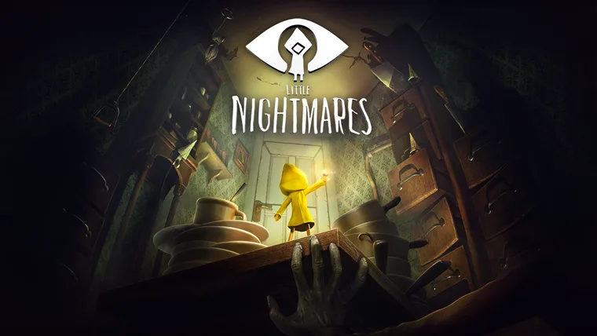

¿Qué es little nightmare?
"Little Nightmares" es un videojuego de rompecabezas y horror de supervivencia desarrollado por Tarsier Studios y publicado por Bandai Namco Entertainment para Nintendo Switch, Microsoft Windows, PlayStation 4 y Xbox One.
"Descubre los nauseabundos secretos de Las Fauces y sobrevive a las atenciones de sus monstruosos residentes mientras intentas ayudar a Six a escapar al mundo exterior."
Una niña hambrienta
El juego se caracteriza por una niña atrapada en las más oscuras profundidades de Las Fauces, sola y hambrienta, Six se enfrenta a un mundo plagado de peligros. La mayoría de los niños ya se habrían rendido, pero Six no es como los demás.


Lo que hace especialmente interesante a "Little Nightmares" es que se caracteriza por su estilo de arte distintivo, una narrativa ambiental que cuenta la historia sin diálogos explícitos, un enfoque en el sigilo y la resolución de rompecabezas, una atmósfera aterradora, diseños de personajes memorables, exploración detallada y una historia enigmática. Estas características lo hacen único en el mundo de los videojuegos y contribuyen a su inmersión y atractivo.